Los organismos internacionales económicos , la UE y EEUU han demostrado una ceguera ante la corrupción política presente en la extinta URSS que sólo siendo voluntaria resulta comprensible.
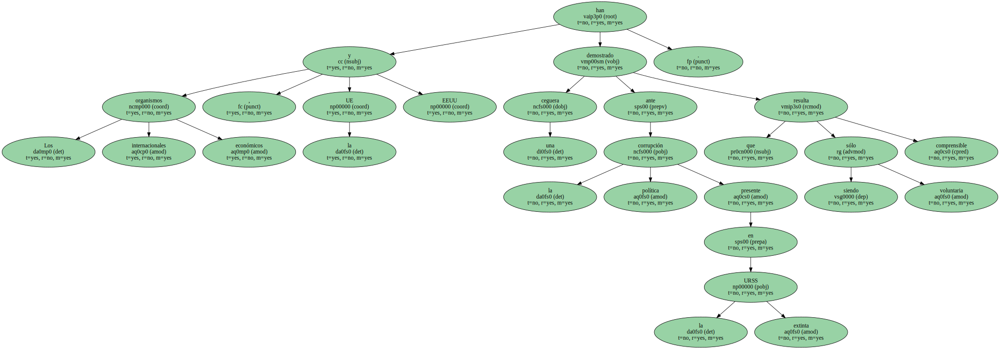El estallido del escándalo de la corrupción del entorno del presidente ruso Boris Yeltsin ha sorprendido sólo a aquellos que querían darse por no enterados o bien que realmente no se enteran de nada de lo que pasa en el mundo.
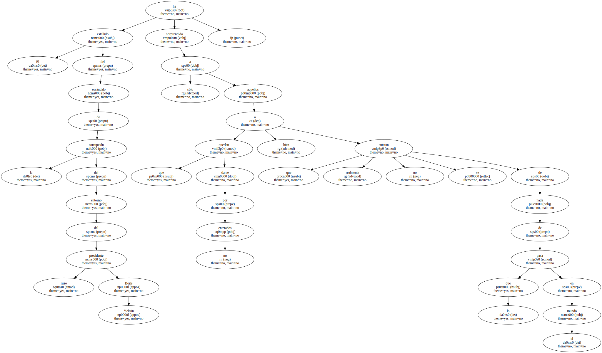El estallido del escándalo de la corrupción del entorno del presidente ruso Boris Yeltsin ha sorprendido sólo a aquellos que querían darse por no enterados o bien que realmente no se enteran de nada de lo que pasa en el mundo.
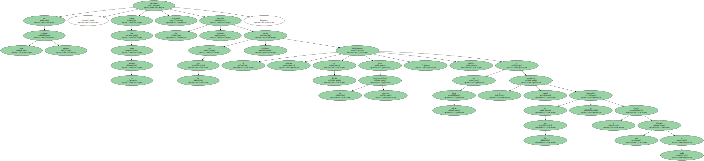En estas mismas páginas y desde hace ya muchos meses veníamos criticando la pasividad interesada con la que Occidente trataba el acelerado deslizamiento de Rusia hacia la ingobernabilidad absoluta , debido en primer lugar a la masiva corrupción en la que se desenvolvía el círculo más allegado al poder.
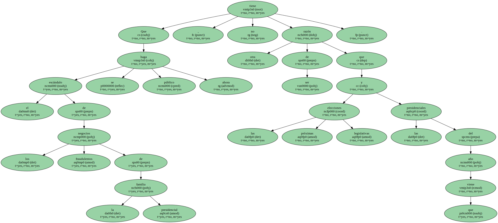Que el escándalo de los negocios fraudulentos de la familia presidencial se haga público ahora , no tiene otra razón de ser que las próximas elecciones legislativas y las presidenciales del año que viene.
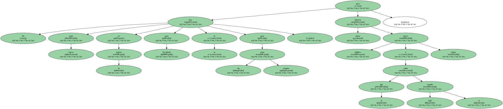No hay nada nuevo en la noticia ni para Occidente ni para los propios rusos ; pero ahora interesa hacer público lo que todo el mundo sabía o intuía.
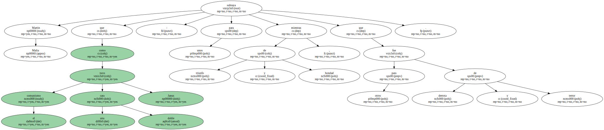Martin Malia subraya que el comunismo tuvo una doble cara como Janus : para unos de triunfo y bondad , mientras que para otros fue de derrota y terror.

Cuando el sistema soviético se derrumbó , Occidente también adoptó esa postura ambivalente : por un lado todo eran ruinas y miseria y por el otro esperanza en una rápida adaptación de la nueva Rusia a los cánones occidentales que , por otro lado , muchos de ellos habían desaparecido al mismo tiempo que la Unión Soviética.
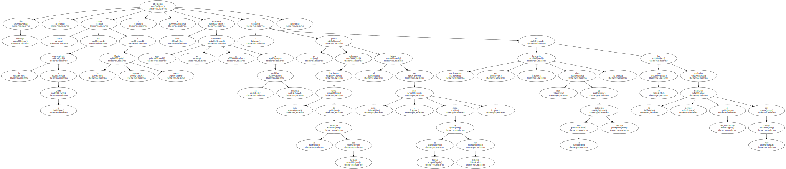Sin embargo , tanto en lo concerniente a la URSS como a la supuesta nueva Rusia , se utilizaron unos extremos que no se conforman a la realidad histórica : no podía enfocarse el futuro de aquel país , como de hecho de ningún otro , haciendo tabla rasa de la herencia del pasado y es precisamente esa herencia , más viva de lo que muchos quisieran , lo que ha producido la actual situación de descomposición del Estado ruso.

La corrupción en la época postsoviética es la adaptación a un capitalismo primitivo de lo que era la corrupción en los tiempos soviéticos y las redes que se hicieron con el poder y constituyeron los grupos de intereses que degeneraron rápidamente en mafias tenían sus raíces en los grupos que controlaban en la época anterior los contactos con el extranjero.
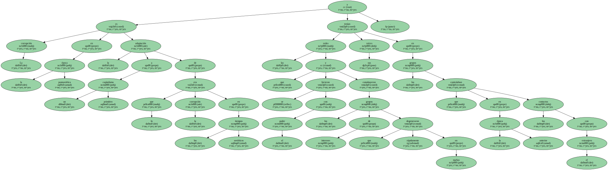Es a partir de los circuitos que movían los intercambios entre el antiguo bloque comunista y Occidente de donde han surgido las nuevas redes de poder en la época de Yelstin.
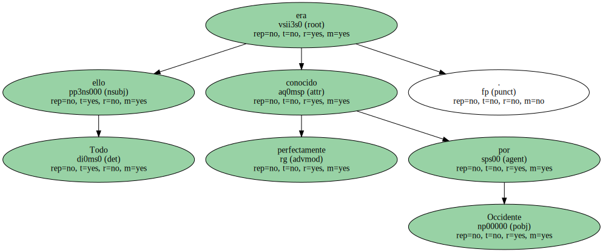Todo ello era perfectamente conocido por Occidente.
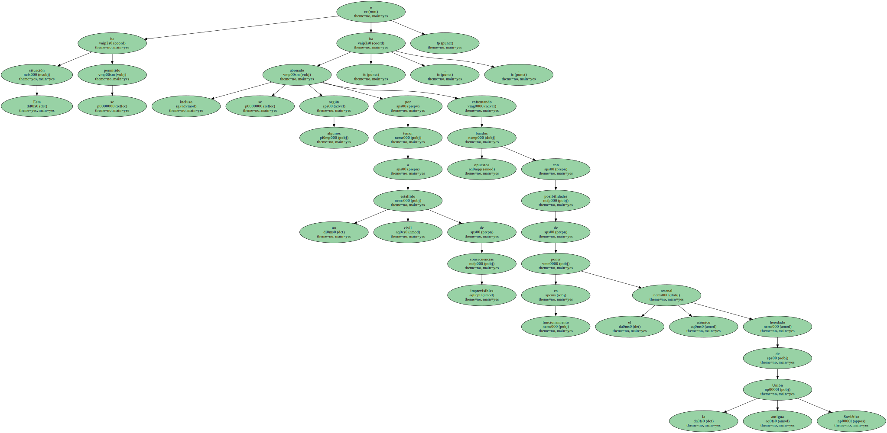Esta situación se ha permitido e incluso se ha abonado , según algunos , por temor a un estallido civil de consecuencias imprevisibles , enfrentando bandos opuestos con posibilidades de poner en funcionamiento el arsenal atómico heredado de la antigua Unión Soviética.
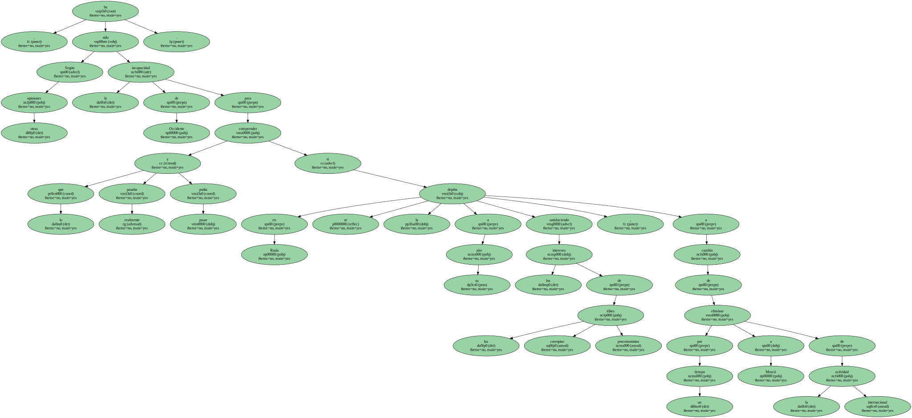Según otras opiniones , ha sido la incapacidad de Occidente para comprender lo que realmente pasaba y podía pasar en Rusia si se la dejaba a su aire satisfaciendo los intereses de las corruptas élites poscomunistas , a cambio de eliminar por un tiempo a Moscú de la actividad internacional.
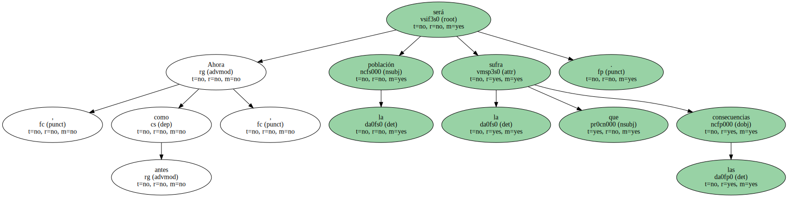Ahora , como antes , será la población la que sufra las consecuencias.
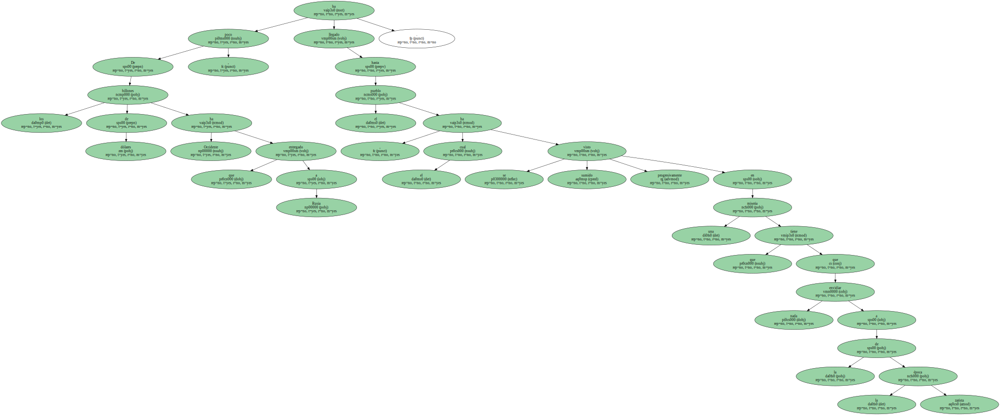De los billones de dólares que Occidente ha entregado a Rusia , poco ha llegado hasta el pueblo , el cual se ha visto sumido progresivamente en una miseria que nada tiene que envidiar a la de la época zarista.
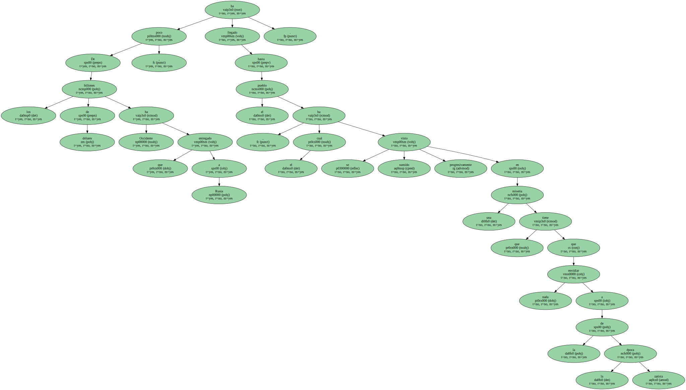Al hacerse público el masivo enriquecimiento de todos aquellos que en un momento o en otro han formado parte de la élite rusa , será objetivamente difícil para los medios económicos internacionales continuar prestando a unos gobiernos cuyos miembros se acusan mutuamente de saquear impunemente las arcas del Estado , empezando por el entorno presidencial.
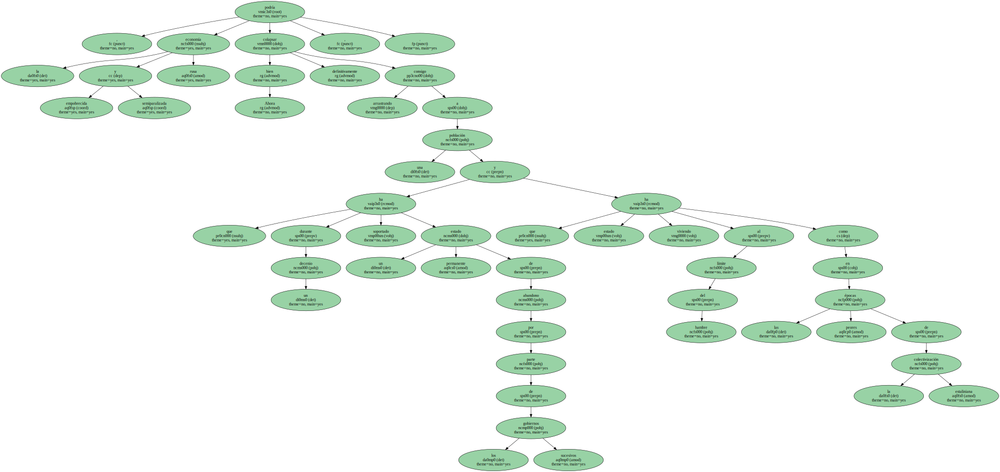Ahora bien , la empobrecida y semiparalizada economía rusa podría colapsar definitivamente , arrastrando consigo a una población que durante un decenio ha soportado un permanente estado de abandono por parte de los sucesivos gobiernos y que ha estado viviendo al límite del hambre como en las peores épocas de la colectivización estaliniana.
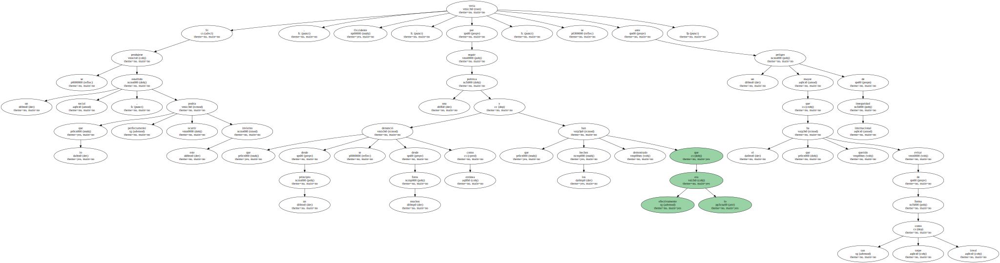Ahora bien , la empobrecida y semiparalizada economía rusa podría colapsar definitivamente , arrastrando consigo a una población que durante un decenio ha soportado un permanente estado de abandono por parte de los sucesivos gobiernos y que ha estado viviendo al límite del hambre como en las peores épocas de la colectivización estaliniana.
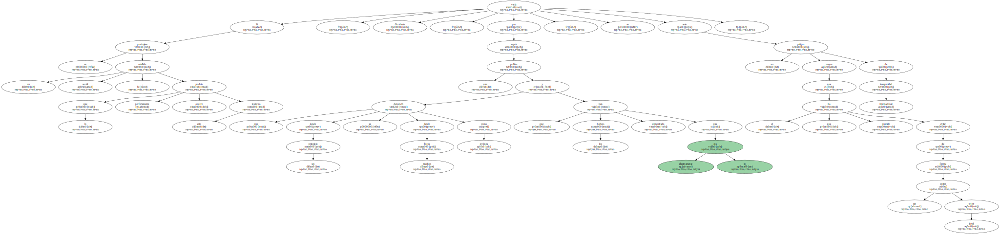Ahora bien , la empobrecida y semiparalizada economía rusa podría colapsar definitivamente , arrastrando consigo a una población que durante un decenio ha soportado un permanente estado de abandono por parte de los sucesivos gobiernos y que ha estado viviendo al límite del hambre como en las peores épocas de la colectivización estaliniana.
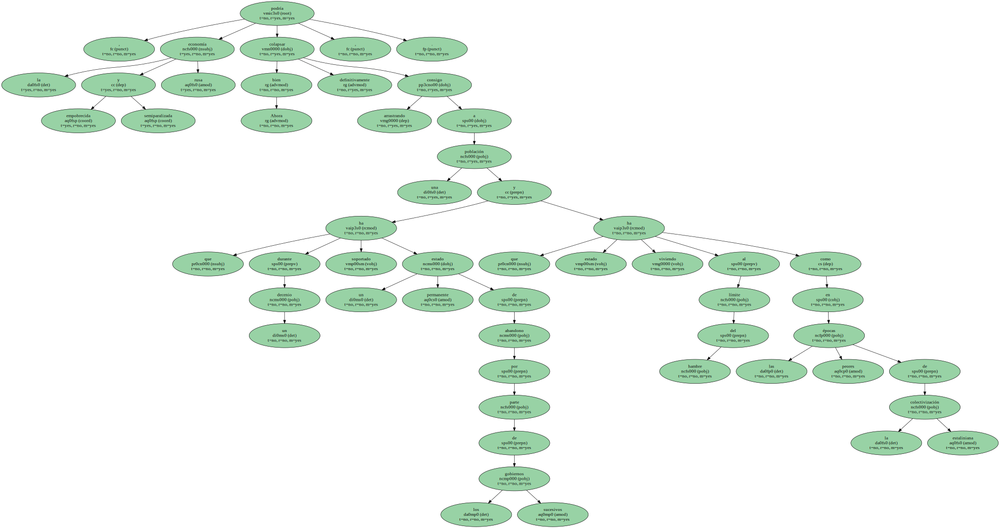Ahora bien , la empobrecida y semiparalizada economía rusa podría colapsar definitivamente , arrastrando consigo a una población que durante un decenio ha soportado un permanente estado de abandono por parte de los sucesivos gobiernos y que ha estado viviendo al límite del hambre como en las peores épocas de la colectivización estaliniana.
Si se produjese un estallido social , lo que podría perfectamente ocurrir este invierno , Occidente , por seguir una política que desde un principio se denunció desde muchos foros como errónea y que los hechos han demostrado que efectivamente lo era , se vería ante un peligro mayor de inseguridad internacional que el que ha querido evitar de forma tan torpe como irreal.
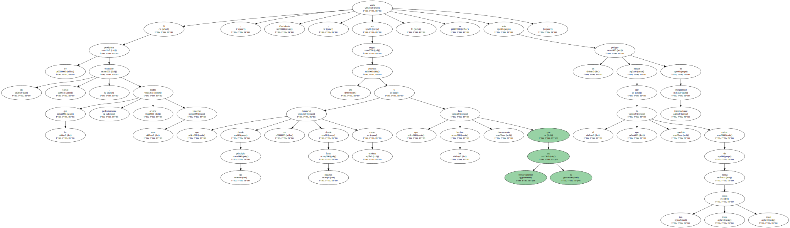